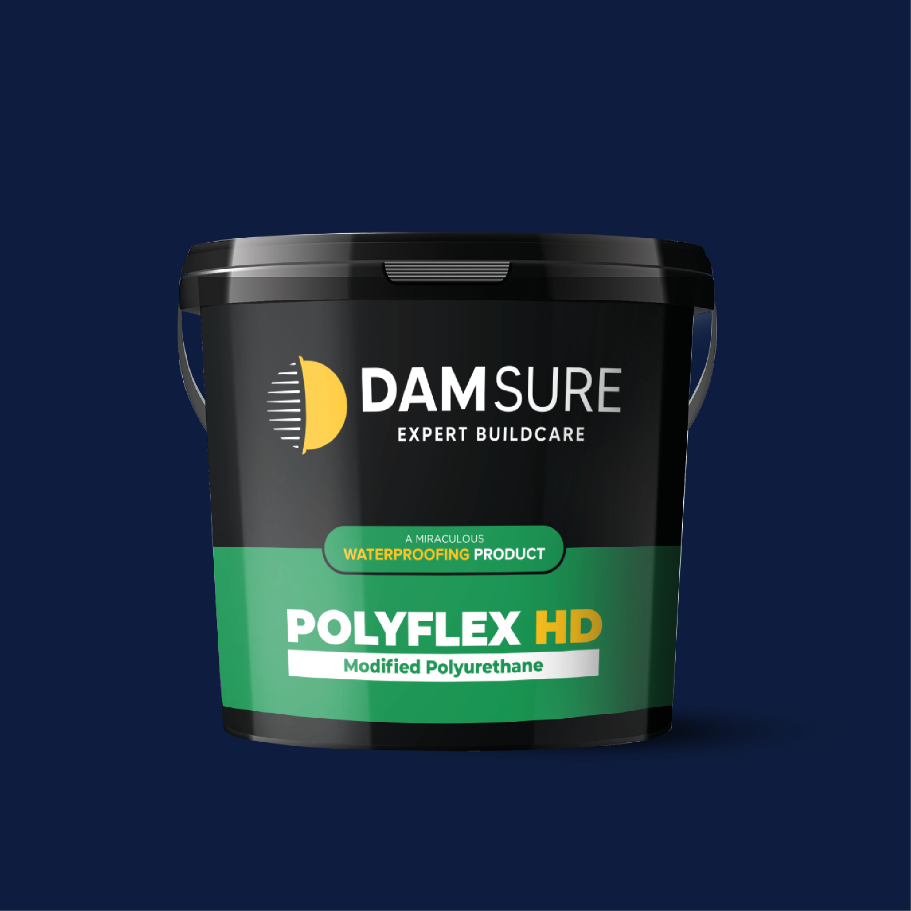
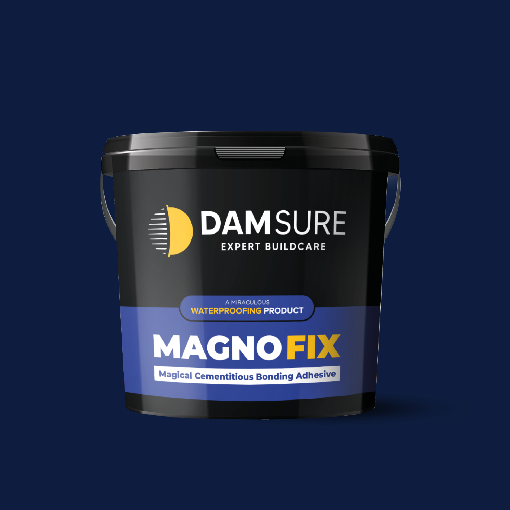
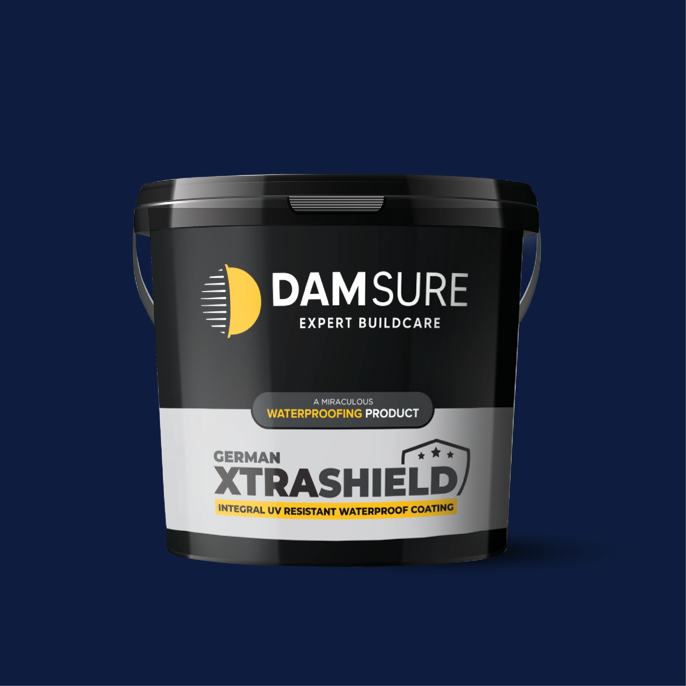
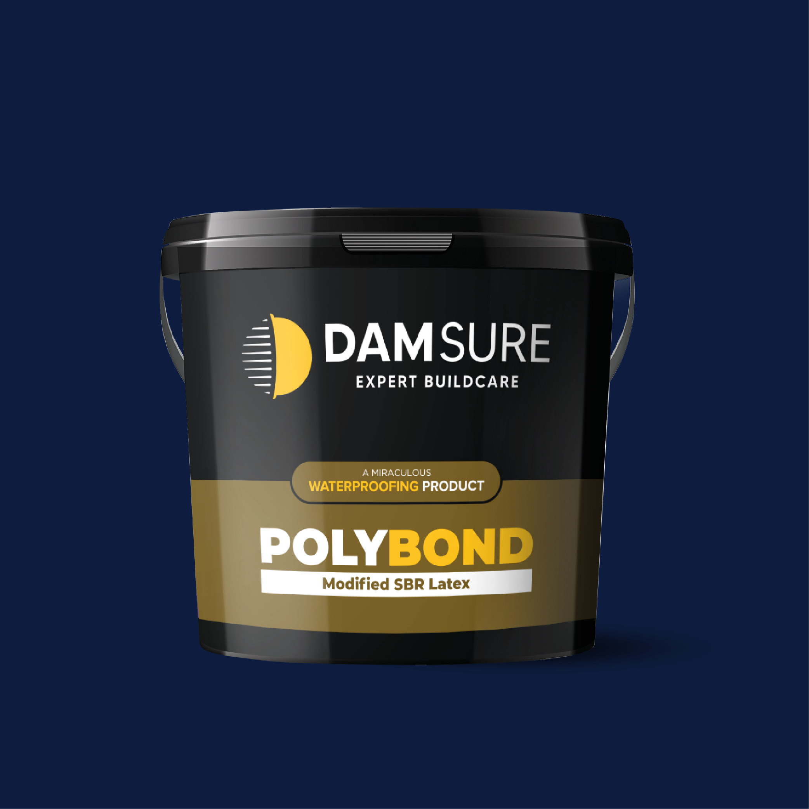
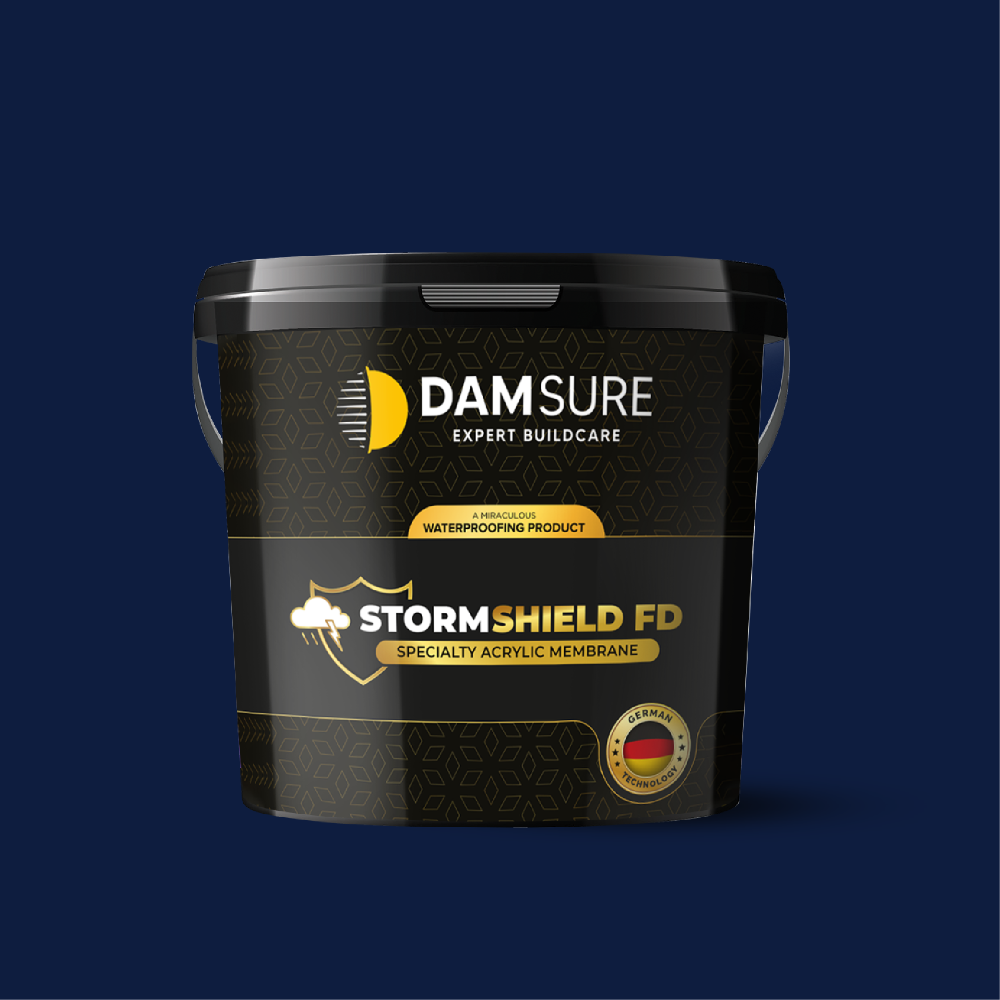
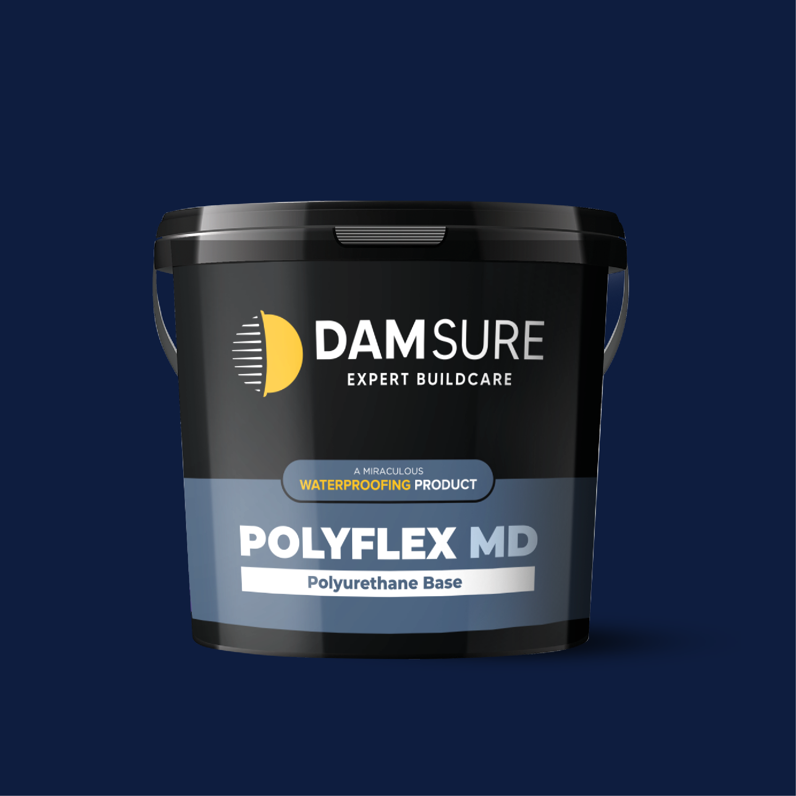
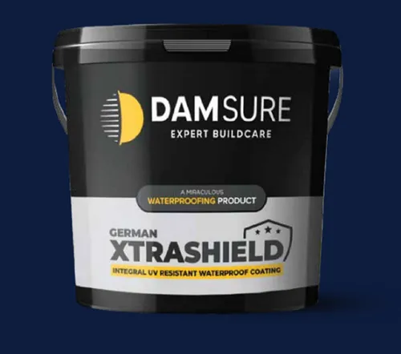
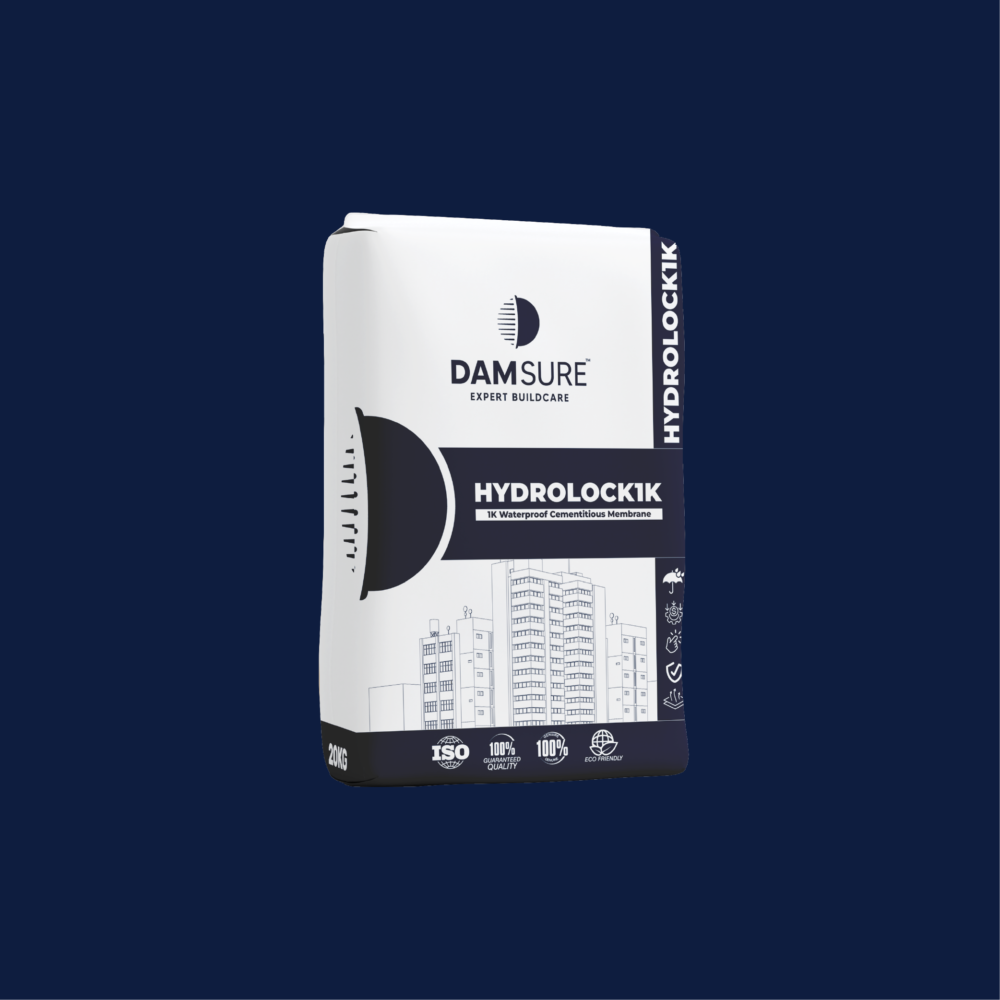
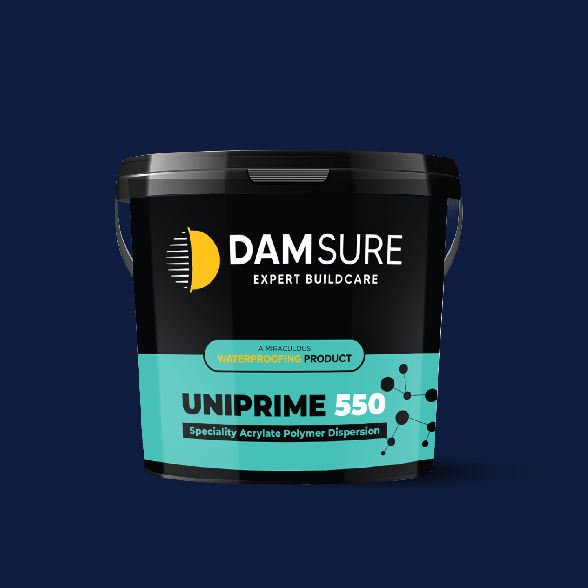
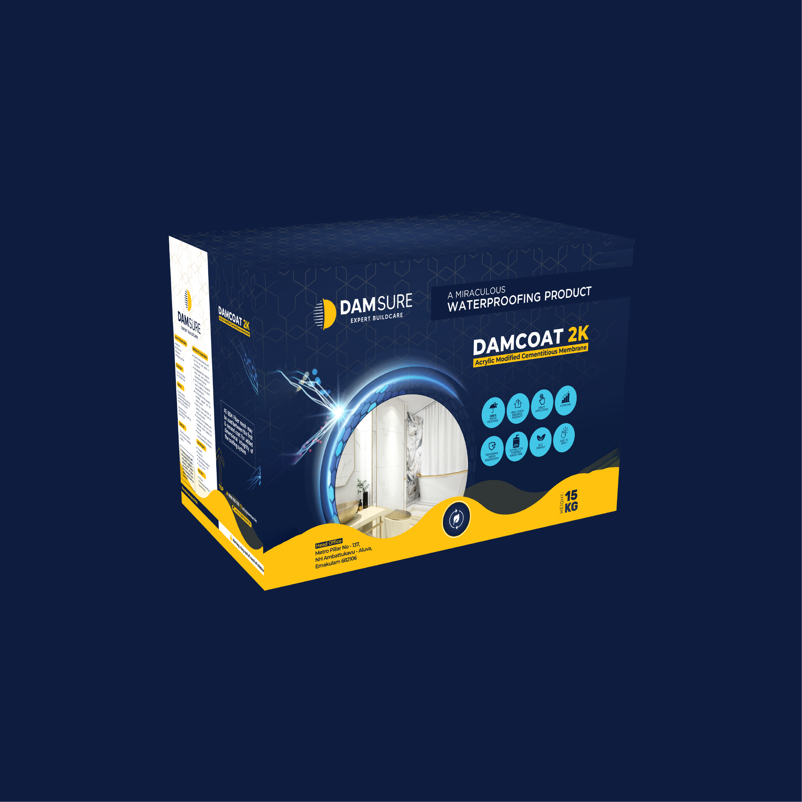

We provide professional waterproofing products and services for homes, villas, apartments, commercial buildings, terraces, bathrooms and water tanks.

POLYFLEX HD is an elastomeric polyurethane modified acrylic coating product that provides 100% waterproofing protection.

MAGNOFIX, the ultimate solution for high bonding in construction projects. Our adhesive is specially formulated to provide superior waterproofing

GERMAN XTRASHIELD is a modified elastomeric polyurethane modified acrylic coating product, that provides 100% waterproofing protection

POLYBOND is a cementitious waterproofing primer and a bonding agent based On modified SBR latex.

Stormshield FD is a quick-setting acrylic coating designed for waterproofing Concrete structures.

Polyflex MD is a single component liquid applied elastomeric polyurethane based coating. It is designed to give long lasting.

A high-performance, fiber-reinforced elastomeric waterproofing coating designed for extreme structural movement and heavy-duty moisture protection.

1K Waterproof Cementitious Membrane HYDROLOCK 1K is a single Component flexible cementitious waterproofing membrane based on VAE technology.HYDROLOCK 1K requires only the addition of specified amount of water on site before application.

UniPrime 550 is a ready-touse acrylic primer that enhances adhesion and durability of waterproofing and coating systems on interior and exterior surfaces.

DAMCOAT 2K is a two components flexible cementitious acrylic waterproofing membrane, DAMCOAT 2K enables a convenient and hassle-free application.